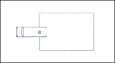
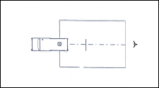

| Objetivo: |
Estudiar cómo se propaga la luz.
Determinar el tipo y la forma de propagación utilizando el método del visor.
|
|
| Introducción: |
La luz emitida por las fuentes luminosas es capaz de viajar a través de materia o en ausencia de ella, aunque no todos los medios
permiten que la luz se propague a su través.
Desde este punto de vista, las diferentes sustancias materiales se pueden clasificar en opacas, transparentes y traslucidas. Aunque la
luz es incapaz de traspasar las opacas, puede atravesar las otras. Las sustancias transparentes tienen, además, la propiedad de que la
luz sigue en su interior una sola dirección. Éste es el caso del agua, el vidrio o el aire. En cambio, en las traslucidas la luz se
dispersa, lo que da lugar a que a través de ellas no se puedan ver las imágenes con nitidez. El papel vegetal o el cristal esmerilado
constituyen algunos ejemplos de objetos traslúcidos.
En un medio que además de ser transparente sea homogéneo, es decir, que mantenga propiedades idénticas en cualquier punto del
mismo, la luz se propaga en línea recta. Esta característica, conocida desde la antigüedad, constituye una ley fundamental de la
óptica geométrica. Dado que la luz se propaga en línea recta, para estudiar los fenómenos ópticos de forma sencilla, se acude a
algunas simplificaciones útiles. Así, las fuentes luminosas se consideran puntuales, esto es, como si estuvieran concentradas en un
punto, del cual emergen rayos de luz o líneas rectas que representan las direcciones de propagación. Un conjunto de rayos que
parten de una misma fuente se denomina haz. Cuando la fuente se encuentra muy alejada del punto de observación, a efectos
prácticos, los haces se consideran formados por rayos paralelos. Si por el contrario la fuente está próxima la forma del haz es
cónica. |
|
|
| Desarrollo Experimental: |
Montaje
Coloca en la mesa la hoja de papel, y la caja luminosa con la parte de la lámpara sobre el papel, como se ve en la Figura 1.
Marca a lápiz con rayas finas, la posición de la caja luminosa.
Experimento 1:
Leyes de la Propagación de la Luz.
Conecta la caja luminosa a la fuente de alimentación (12 V).
Observa, la luz que sale de la caja, y marca con pares de cruces el borde superior e inferior del haz.
Une las cruces de cada uno de sus lados y rellena con un lápiz amarillo la superficie ocupada por el haz de la luz.
¿Cómo discurren los límites de haz de la luz? Anota lo que observas.
Dale la vuelta al papel, coloca la caja luminosa sobre la otra cara (Figura 1), y marca su posición con un lápiz.
Sujeta en el haz a unos 2 cm. de distancia de la caja luminosa, el diafragma de tres rendijas. Observa la trayectoria de la luz
antes y después del diafragma.
Marca los bordes de los dos haces anchos (arriba y abajo), y los haces estrechos visibles con dos cruces cada uno. Une con una
línea todas las cruces que se correspondan, colorea de nuevo los dos haces más anchos con el lápiz amarillo.
¿Cómo discurren los bordes de los haces más anchos y los haces estrechos? Anota de nuevo lo que observas.
Desconecta la fuente de alimentación y quita la caja luminosa de papel.
Realiza las siguientes observaciones:
La trayectoria de los límites del haz de luz
Trayectoria de los bordes de los haces anchos
Trayectoria de los haces estrechos
Experimento 2:
Método del Visor ver Figura 2
Coloca en la caja luminosa el diafragma de tres rendijas en la parte de la lámpara, y ponla sobre el borde de una hoja de papel
(Figura 2).
Conecta la caja a la fuente de alimentación (12V).
Marca la posición de la caja, el orificio central del diafragma de tres rendijas a través de la rendija del otro diafragma, Deberás
desplazar cuidadosamente, en sentido transversal, el diafragma de tres rendijas
Realiza las siguientes observaciones:
Posición de las marcas de lápiz y del orificio del diafragma |
| Resultados y Conclusiones: |
- Compara los resultados del Experimento 1 y 2 ¿Que tienen en común y en que se diferencian?
- ¿Que ley podrías formular sobre la propagación de la luz?
- Piensa en algunas aplicaciones técnicas de la ley que has encontrado, pon dos ejemplos.
- ¿Como se propaga la luz?
En la primera parte del experimento los alumnos estudiarán experimentalmente una de las propiedades esenciales de la luz, su
propagación rectilínea en un medio homogéneo. Esta ley se utiliza para razonar los resultados de la segunda parte del
experimento, abriéndose el camino metodológico para considerar importantes aplicaciones técnicas de la propagación rectilínea de
la luz.Mientras que en el Experimento 1 se determina la propagación rectilínea de la luz objetivamente con una regla, en el Experimento 2 se
trata de demostrar la propagación rectilínea a través del visor.
|
|
|
| Figura 1: Leyes de la Propagación de la Luz |
|  |
| |
| Figura 2: Método del Visor |
|  |
|